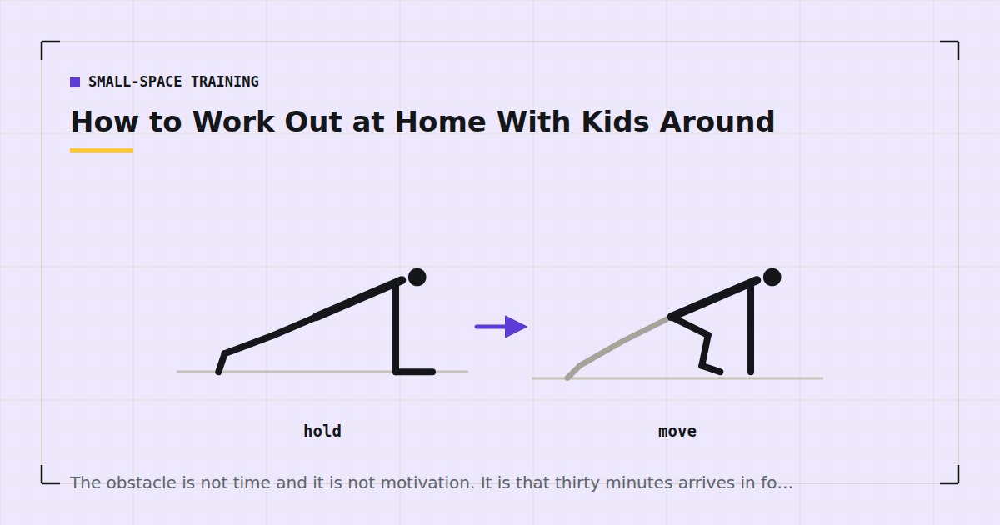

Small-Space Training
How to Work Out at Home With Kids Around
The obstacle is not time and it is not motivation. It is that thirty minutes arrives in four pieces, and almost every training plan assumes it arrives in one.

Parents are told to find time. It is the wrong instruction, because the time usually exists — it simply arrives in fragments, and a training plan built on continuity cannot use fragments.
The fix is not better scheduling. It is a session designed on the assumption that it will be stopped.
Reframing the problem
Consider what an interruption costs under different session formats.
In a circuit, stopping for four minutes in the middle of a round effectively ends that round. The format derives part of its effect from continuity, and you cannot resume it cleanly.
In a session of straight sets, an interruption costs you nothing except time. A four-minute gap between sets is a longer rest period, and a longer rest period usually makes the next set slightly better. The format is almost perfectly interruption-tolerant, and hardly anyone chooses it for that reason.
That single structural choice does more for a parent's training than any amount of discipline.
Four design rules
1. Sets, not circuits. Every exercise is a standalone block. An interruption costs one set, not a round.
2. Let the interruptions be the rest. Do not try to hold to a prescribed rest period. Whatever the interruption took is your rest. Since research on training frequency and volume shows the weekly total matters more than any session's internal structure,1 a ragged session is not a compromised one.
3. Order by priority, not by preference. Put the most valuable exercises first, so that a session abandoned at forty per cent is still a session that trained the things that mattered. This is the rule that does the most work, and it is why the ordering in the 30-minute parent session is not negotiable.
4. Standing work before floor work. Getting up and down repeatedly has a friction cost that compounds. Put anything requiring you to lie down at the end, when you are least likely to need to move quickly.
Three session structures
The priority ladder — 30 minutes, interruptible
Six exercises in strict priority order, three sets each, rest as long as it takes. Split squats, push-ups, rows, glute bridges, pike push-ups, dead bugs. If you complete the first three you have trained legs, chest and back — a complete session by any reasonable standard.
The micro-set — scattered across a day
One hard set at a time, whenever a gap appears. A set of split squats while the kettle boils, push-ups against the counter while something is in the oven, a set of rows in a doorway on the way upstairs. Three or four of these a day, most days, accumulates a real weekly volume — and weekly volume is what drives adaptation.2
The sets have to be genuinely hard for this to work. Ten easy squats is movement, not training. And it is a fallback for bad weeks rather than a permanent structure, because progression becomes very difficult to track.
The ten-minute minimum
Three exercises, two sets each, ten minutes. Decided in advance and written down, so it is not a judgement call made while exhausted. Having this defined matters more than it sounds — the alternative is deciding in the moment whether a reduced session counts, and that decision reliably goes the wrong way.
What works at different ages
Under one. Genuinely the easiest phase for training, once you accept that the timing is unpredictable. Nap windows are usually reliable enough for a twenty-minute session, and the child is not yet mobile. The constraint is noise — see quiet home workouts for training while someone sleeps in the next room.
One to three. The hardest phase. Mobile, curious, and drawn to whatever you are doing. Position yourself facing them, expect to be climbed on, and accept that a set may end early. Floor exercises attract far more attention than standing ones.
Three to six. Easier, because they can be given something to do and will occasionally join in. This is the phase where training in front of them starts to have a secondary benefit.
Six and up. Largely a scheduling problem again rather than a supervision one, which puts you back into the territory covered by the weekly home workout schedule.
Exercises that survive a child in the room
Some movements tolerate a toddler far better than others.
Good: split squats and reverse lunges (standing, stable, easy to abandon mid-set), push-ups against a counter, standing rows with a band, glute bridges, planks. Planks in particular become a piece of playground equipment, which is fine.
Poor: anything overhead, anything requiring balance on one leg without support, anything where a sudden shift in load could hurt either of you. Pistol squats and handstand work are not for a room with a small child in it.
Surprisingly good: carrying. A suitcase carry with a child instead of a bag is a legitimate anti-lateral-flexion exercise, and it is one of the few that gets easier to schedule rather than harder — the category is explained in core training without sit-ups.
A session abandoned at forty per cent is a good session, provided the forty per cent you did was the part that mattered.
Safety, briefly
Never let a child climb on you during anything overhead, anything balancing on one leg, or anything where you are supporting weight above your head. And keep the training area clear of anything that becomes dangerous if a child pulls it over — a doorway pull-up bar is an obvious example, and should be removed from the frame when not in use if a small child can reach it.
The guilt
Worth naming, because it stops more parents training than any scheduling problem.
Thirty minutes three times a week is roughly one and a half per cent of your waking hours. Adult activity guidance exists because inactivity carries real health consequences,3 and those consequences do not pause during the years when you are busiest — if anything, the years with small children are the ones where sleep, stress and sedentary time are all working against you at once.
There is also a reasonable, if harder to evidence, case that children who see exercise as an unremarkable part of adult life absorb something useful from that. My own experience is that a toddler who watches you do press-ups three times a week eventually starts doing their own version, badly and with enormous enthusiasm, and that is not the worst outcome.
Where to go next
For the full written session, see the 30-minute strength workout for busy parents. For training while someone sleeps, see quiet bedroom workouts.
Frequently asked questions
How can I work out at home with kids around?
Design the session to survive interruption rather than trying to protect an uninterrupted block. Use standalone sets instead of circuits, let interruptions be your rest periods, and order exercises so a half-finished session still trained the most valuable movements.
What exercises can I do with a toddler in the room?
Standing and stable movements work best: split squats, reverse lunges, counter push-ups, band rows, glute bridges and planks. Avoid anything overhead, anything balancing on one leg without support, and anything where a sudden shift in load could hurt either of you.
Is it safe to exercise with a child climbing on me?
For planks and floor work, generally yes and it adds useful load. Never during overhead movements, single-leg balance work, or anything where you are supporting weight above your head.
How do I fit workouts around nap times?
Under about a year, nap windows are usually reliable enough for a twenty-minute session, with noise being the main constraint. From one to three, naps become less predictable and an interruption-tolerant structure matters more than the timing.
What if I only get five minutes at a time?
Use micro-sets: one genuinely hard set whenever a gap appears, three or four times a day. Weekly training volume drives adaptation regardless of how it was packaged, though this works better as a fallback than as a permanent structure.
Sources and further reading
- Schoenfeld BJ, Ogborn D, Krieger JW. “Effects of Resistance Training Frequency on Measures of Muscle Hypertrophy: A Systematic Review and Meta-Analysis.” Sports Medicine, 2016;46(11):1689–1697. PubMed.
- Schoenfeld BJ, Ogborn D, Krieger JW. “Dose-response relationship between weekly resistance training volume and increases in muscle mass: A systematic review and meta-analysis.” Journal of Sports Sciences, 2017;35(11):1073–1082. PubMed.
- World Health Organization. WHO Guidelines on Physical Activity and Sedentary Behaviour. 2020.
- NHS. Physical activity guidelines for adults aged 19 to 64.
Comments
Comments are not enabled yet. Add a hosted comment embed (Disqus, Commento, Giscus) inside this container when you are ready.